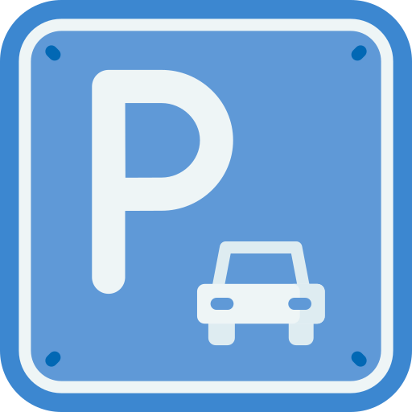

Samuel Wise Portfolio
Demos

Wordle Game
Parking Lot
After the major world-wide success of WORDLE I worked on a similar simple word guesser game of my own with the same title. In the same manor it would look at the word guessed by the player and compare it with the current *word of the day*, the real challenge was getting the word to handle words with repeat letters the same way, like apple, if the player guessed people it would tell them that the first p is not in the word while the second is in the correct spot. A glaring oversight but one that was quickly fixed
I worked to create a parking lot counter for a local parking lot. The program had to count as a car went in the lot and when another would come in. It also had to display the current time/date and the weather. The challenge here was to remember that just because a car had entered the lot it didnt mean that that car had actually parked, to avoid confusion or overfilling the lot we simply displayed data on the LED screen as if when someone entered they found a parking space immediately
